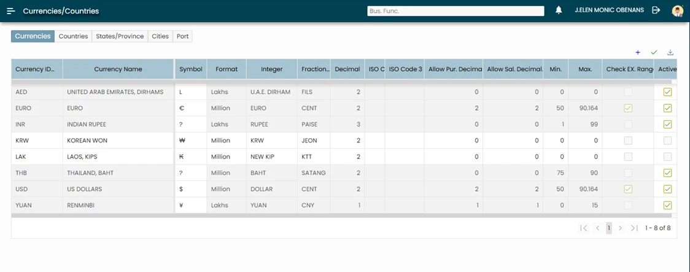
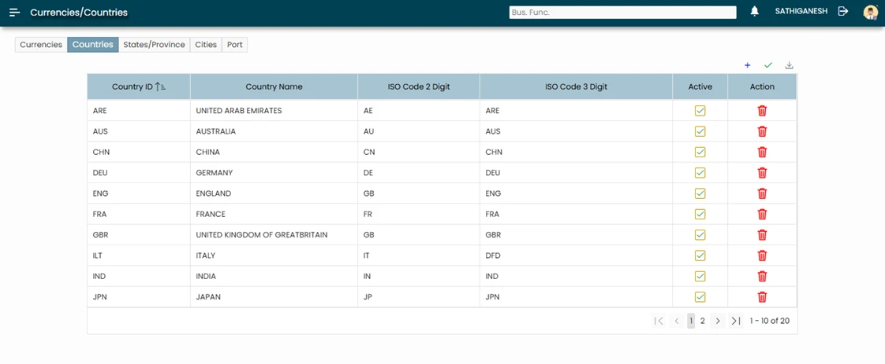
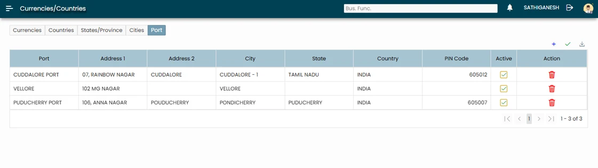

<div data-category="Financials" data-title="Currencies/Countries" data-updated="December 01, 2025" data-contributors="RoadmapIT" data-breadcrumb="Home,Financials,Currencies/Countries">
  <div class="page-content">
    <p>The system already has preset currencies and countries for financial transactions outside of the company. If needed, users can also add new currencies, countries, cities, and villages.</p>
    <p>This screen is used to create a Business Unit.</p>
    <h5>Navigation path:</h5>
    <p>Setup \ Currencies/Countries</p>
    
    <ul style="list-style-type: none; align-content: center">
      <li class="mouse-icon">
        Click
        <i class="bi bi-plus fs-4 mx-2 text-primary"></i>
        to create a new currency Type.
      </li>
      <li class="mouse-icon">Enter Currency ID.</li>
      <li class="mouse-icon">Enter Currency Name.</li>
      <li class="mouse-icon">Enter Currency Symbol.</li>
      <li class="mouse-icon">Enter Currency Format.</li>
      <li class="mouse-icon">Enter Currency Integer.</li>
      <li class="mouse-icon">Enter Fraction and Decimal details.</li>
      <li class="mouse-icon">Click on Check Ex. Range checkbox if the exchange rate to be checked for the currency type.</li>
      <li class="mouse-icon">Click on the Active checkbox to activate the Currency Type.</li>
      <li class="mouse-icon">
        Click
        <i class="bi bi-check-lg fs-4 mx-2 text-success"></i>
        to save.
      </li>
    </ul>
    <h2 class="text-uppercase">Countries</h2>
    
    <ul style="list-style-type: none; align-content: center">
      <li class="mouse-icon">Click on the Active checkbox to activate the Country’s Type.</li>
    </ul>
    <h2 class="text-uppercase">Port</h2>
    
    <ul style="list-style-type: none; align-content: center">
      <li class="mouse-icon">Click on the Active checkbox to activate the Port Type.</li>
    </ul>
  </div>
</div>
